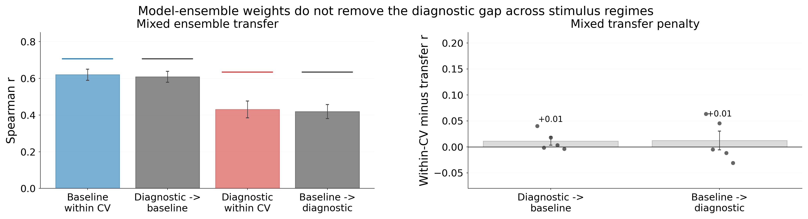

One-Sentence Takeaway
The Problem Setup
What Changed in the Analysis
Old prototype
Mixed model-brain correlations, raw split-half reliability, and residual reliability on one axis. This made the figure hard to interpret because model correlations should be compared to sqrt(noise ceiling reliability), not the raw reliability.
Corrected version
Separates two questions: how close does the best 20-model ensemble get to the correlation ceiling, and is the model residual shared across subjects using leave-one-subject-out residual RSA?
The Two Headline Tests
Best possible model ensemble
Fit a ridge-weighted ensemble of model RDMs to the brain RDM with cross-validation. Compare it to the correct model-correlation ceiling: sqrt(split-half reliability).
Shared residual brain structure
Residualize each subject's brain RDM against the model-RDM space. Then correlate that residual with the leave-one-subject-out mean residual from the other participants.
Key Corrected Result: Mixed RSA, All-Model Diagnostic Set
Nature-Critical Contrast
Mixed RSA, all-model diagnostic set minus baseline. Means are paired across the five subjects; Vicco baseline is averaged over 10 N=100 bootstraps before pairing.
| Metric | baseline | diagnostic | difference | 95% CI |
|---|---|---|---|---|
| Cross-validated ensemble gap | 0.089 | 0.217 | +0.128 | [0.030, 0.226] |
| Full-fit ensemble gap | 0.056 | 0.156 | +0.099 | [0.024, 0.175] |
| Within-subject residual fraction | 0.435 | 0.727 | +0.292 | [0.128, 0.456] |
| LOSO residual fraction | 0.458 | 0.571 | +0.113 | [0.055, 0.171] |
| Absolute LOSO residual | 0.281 | 0.275 | -0.005 | [-0.033, 0.022] |
Computed Summary
Means across subjects. Vicco baseline values below are averaged over 10 bootstrap samples of 100 images. The corrected run is complete for both fixed and mixed RSA across all diagnostic sets.
| RSA / stimulus set | best single | ensemble | sqrt(NC) | ensemble gap | LOSO brain | LOSO residual |
|---|---|---|---|---|---|---|
| mixed / baseline | 0.586 | 0.605 | 0.695 | 0.089 | 0.608 | 0.281 |
| mixed / all-model diagnostic | 0.405 | 0.418 | 0.635 | 0.217 | 0.481 | 0.275 |
| mixed / SOTA diagnostic | 0.524 | 0.539 | 0.734 | 0.195 | 0.649 | 0.384 |
| mixed / architecture diagnostic | 0.499 | 0.507 | 0.625 | 0.119 | 0.551 | 0.255 |
| mixed / dataset diagnostic | 0.420 | 0.424 | 0.601 | 0.177 | 0.485 | 0.294 |
| mixed / training-objective diagnostic | 0.553 | 0.552 | 0.724 | 0.172 | 0.628 | 0.332 |
| fixed / baseline | 0.296 | 0.335 | 0.695 | 0.360 | 0.608 | 0.534 |
| fixed / all-model diagnostic | 0.156 | 0.190 | 0.635 | 0.444 | 0.481 | 0.450 |
| fixed / SOTA diagnostic | 0.365 | 0.322 | 0.734 | 0.412 | 0.649 | 0.544 |
| fixed / architecture diagnostic | 0.299 | 0.297 | 0.625 | 0.328 | 0.551 | 0.459 |
| fixed / dataset diagnostic | 0.201 | 0.165 | 0.601 | 0.437 | 0.485 | 0.446 |
| fixed / training-objective diagnostic | 0.227 | 0.229 | 0.724 | 0.495 | 0.628 | 0.566 |
Corrected Figure
The top row shows the ensemble gap to the correct model-correlation ceiling. The bottom row shows how much subject-to-subject brain structure remains after residualizing each subject against the full model-RDM space.

Decomposition Figure
This figure separates absolute gaps from residual fractions. The black tick in panel A is the full-fit ensemble upper bound, which is intentionally generous because it is not cross-validated.

Cross-Set Ensemble Transfer
To test whether the diagnostic failure is just a bad choice of ensemble weights, I fit the model-RDM ensemble on one stimulus regime and evaluated it on the other.
The baseline-trained ensemble transfers to the diagnostic set about as well as a within-diagnostic CV ensemble (0.419 vs 0.418), but both remain far below the diagnostic ceiling. So the gap is not rescued by importing the model mixture learned on baseline images.

How to Interpret This
What the result supports
The all-model diagnostic set does not merely make one favorite model look bad. Even an optimized linear mixture of current models remains below the reliable brain signal; even a full-fit ensemble leaves a larger gap than baseline; and a larger fraction of both within-subject and cross-subject reliable structure remains in the residual.
This directly supports the stronger paper claim: current models have not saturated the reliable representational geometry of human visual cortex.
What it does not yet prove
The absolute LOSO residual is basically the same for baseline and all-model diagnostic images, so do not claim that diagnostic images produce more shared residual in raw correlation units. The residual analysis is also correlational RSA: it shows structure outside the current model-RDM space, not yet what visual dimensions define that structure. The Vicco baseline is based on 10 bootstraps here; final paper numbers should use more baseline resamples.
Context in the Paper
Paper-level claim Benchmark saturation is not the same thing as brain-model convergence.
The existing paper already shows that model-brain alignment drops on diagnostic natural images. This new analysis explains why that drop matters: the gap is not closed by choosing a better model from the zoo, by mixing the zoo together, by giving the ensemble an in-sample upper bound, or by transferring baseline-learned ensemble weights. The remaining residual contains reliable within-subject signal and non-trivial shared cross-subject structure.
That turns the story from "controversial stimuli reveal model differences" into "apparent convergence depends on the images used to test it."
Reproducibility Notes
Updated compute script: analysis/01_compute_residual_rsa.py
Useful robust commands:
python analysis/01_compute_residual_rsa.py --rsa-type fixed --output data/parts/fixed.csv
python analysis/01_compute_residual_rsa.py --rsa-type mixed --groups all_models --output data/parts/mixed_all_models.csv
PYTHONNOUSERSITE=1 python analysis/02_decompose_residual_signal.py
PYTHONNOUSERSITE=1 python analysis/03_cross_set_ensemble_transfer.py --rsa-type mixed
PYTHONNOUSERSITE=1 python figures/plot_residual_reliability.py
PYTHONNOUSERSITE=1 avoids a local user-site NumPy 2 / conda Matplotlib ABI mismatch on this machine.